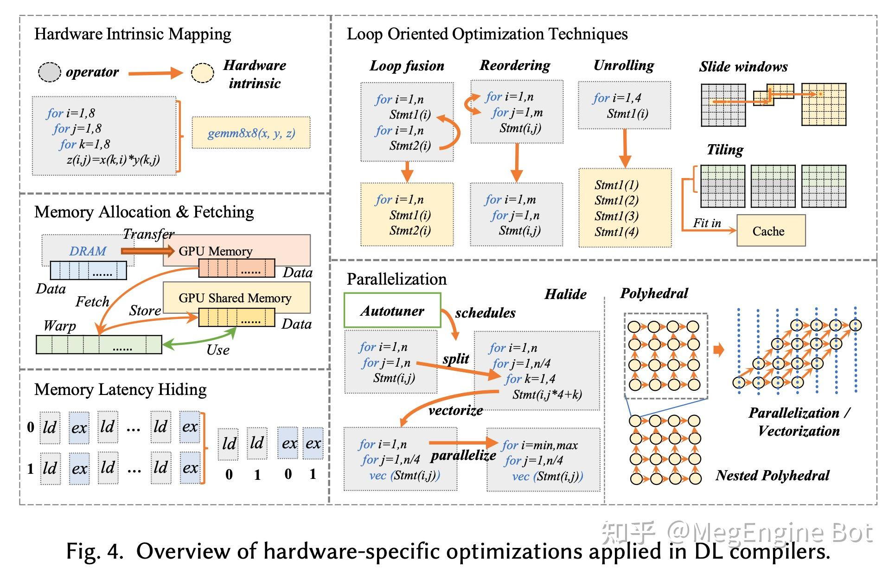

简要介绍
本文档是福来鸽的技术知识图谱, 不定期更新. 目前主要关注的领域有:
- 深度学习算法
- 深度学习应用部署
- 硬件结构
- 性能分析与调优
深度学习模型与算法
模型, 应用和解决方案.
CV
dinov2
dino
NLP
- hacker news对此进行了详细的讨论
AUDIO
- whisper.cpp: whisper模型的C++实现
- Whisper JAX: jax版本实现和加速
- 加速内容: 音频分段批处理(7倍), 使用jax jit(2倍), 使用TPU替换GPU(5倍), 共70倍
- Whisper: whisper模型的Windows客户端, 支持GPU, 小众软件推荐
- openai-whisper-cpu: CPU量化提升吞吐
- whisperX: 提升时间戳精准度
- whisper_real_time: 实时调用音频转换成字符的demo
- WAAS: whisper as a service
- whisper openvino: whisper openvino优化版本
- faster-whisper: 基于CTranslate2的whisper实现
- huggingface finetune whisper: huggingface官方的whisper finetune博客
- AWS finetune whisper: AWS finetune博客, 示例在github
- LanguageLeapAI: 基于whisper的翻译助理
AudioGPT: 论文AudioGPT: Understanding and Generating Speech, Music, Sound, and Talking Head, 代码在github
RECO
BIGS
- github, github.io, githubdaily, haai, jack cui, paper with code, arxiv
- MiniGPT-4实现原理及其核心BLIP2模型实践：从代表性图文对数据集、BLIP2模型结构到调用实践
- weibo分析
- CV 部分采用了 EVA、BEIT、timm 和 DeiT
- NLP 部分采用了 LLaMA
- 框架主体使用了 PyTorch
- 分布式部分，用了Salesforce.com的一个基于 PyTorch 分布式的简单封装和加强库
A Survey of Large Language Models
- 大语言模型综述, github上有中文版
Principle-Driven Self-Alignment of Language Models from Scratch with Minimal Human Supervision
- IBM对模型产生内容进行无害化过滤
- 开源训练llama流程, 这里还部署了一个demo.
- 一个小应用,生成一个会发照片,语音,文字的虚拟女友
multilingual-model-speech-recognition
train
Building Systems with the ChatGPT API
- 吴恩达DLAI的prompt课程, youtube有宝玉的翻译版本
- transformer训练的一些数字知识, 可用于进行性能预估
Transformer Inference Arithmetic
- 推理部分详细计算
- 使用GAN实现图像修改,只需要拖动图片
SpeechGPT: Empowering Large Language Models with Intrinsic Cross-Modal Conversational Abilities
- 使用GPT实现多模态对话, 能实现语音对话
【LLM系列之底座模型对比】LLaMA、Palm、GLM、BLOOM、GPT模型结构对比
- GPT: decoder只保留一个Masked-Multi-Head Attention
- LLaMA: RMSNorm,SwiGLU,Rotary Embedding, AdamW+Cosine learning rate schedule,因果多头注意力
- Palm:swiGLU,Parallel layers, Multi-Query Attention, RoPE, shared Input-Output Embedding
- GLM: layer norm的顺序和残差重新排列, 用于输出标记的单个线性层, Gelu, 二维位置编码
- BLOOM:ALiBi位置嵌入, Embedding LayerNorm再第一嵌入层后直接使用, 250K词汇表,字节BPE,两个全连接层
chatglm_tuning: 基于 LoRA 和 P-Tuning v2 的 ChatGLM-6B 高效参数微调
模型结构和组件
模型的结构及其功能.
attention
conv
norm
pooling
others
深度学习基础入门
- 深度学习基础入门篇[一]：神经元简介、单层多层感知机、距离计算方法式、相似度函数
- 深度学习基础入门篇[二]：机器学习常用评估指标:AUC、mAP、Perplexity等详解
- 深度学习基础入门篇[三]：优化策略梯度下降算法：SGD、MBGD、Momentum、Adam
- 深度学习基础入门篇[四]：激活函数介绍:tanh、sigmoid、PReLU、softmax等
- 深度学习基础5:交叉熵损失函数、MSE、CTC损失、Balanced L1 Loss适用于目标检测
- 深度学习基础入门篇[六]：模型调优学习率设置（Warm Up、loss自适应等
- 深度学习基础入门篇[六(1)]：模型调优：注意力机制[多头注意力、自注意力]，正则化
- 深度学习基础入门篇[七]：常用归一化算法、层次归一化算法、归一化和标准化区别于联系。
- 推荐系统[三]：粗排算法常用模型汇总(集合选择和精准预估)，技术发展历史以及前沿技术
- 推荐系统[四]：精排-详解排序算法LTR poitwise, pairwise, listwise
- 推荐系统[八]算法实践总结V0：腾讯音乐全民K歌推荐系统架构及粗排设计
- 推荐系统[八]算法实践总结V2：排序学习框架(特征提取标签获取方式)以及京东推荐算法精排技术实战
- 推荐系统[八]算法实践总结V1：淘宝逛逛and阿里飞猪个性化推荐：召回算法实践总结
机器学习算法
- 机器学习算法（一）: 基于逻辑回归的分类预测
- 机器学习算法（二）: 基于鸢尾花数据集的朴素贝叶斯(Naive Bayes)预测分类
- 机器学习算法（三）：基于horse-colic数据的KNN近邻预测分类
- 机器学习算法（四）: 基于支持向量机的分类预测（SVM）
- 机器学习算法（五）：基于企鹅数据集的决策树分类预测
- 机器学习算法（六）基于天气数据集的XGBoost分类预测
- 机器学习算法（八）：基于BP神经网络的乳腺癌的分类预测
- 机器学习系列入门系列[七]：基于英雄联盟数据集的LightGBM的分类预测
- 机器学习算法（九）: 基于线性判别模型的LDA手写数字分类识别
模型部署和加速
训练
训练框架
Deepspeed
DeepSpeed Chat: 一键式RLHF训练，让你的类ChatGPT千亿大模型提速省钱15倍
- Deepspeed框架的Chat模型训练实例.
一键式 RLHF 训练 DeepSpeed Chat（一）：理论篇
DeepSpeed Inference: Enabling Efficient Inference of Transformer Models at Unprecedented Scale
DeepSpeed Compression: A composable library for extreme compression and zero-cost quantization
NLP大规模语言模型微调实践：DeepSpeed+Transformers实现简单快捷上手百亿参数模型微调
人手一个 ChatGPT，微软 DeepSpeed Chat 震撼发布，一键 RLHF 训练千亿级大模型
DeepSpeed-Chat：最强ChatGPT训练框架，一键完成RLHF训练！
使用DeepSpeed/P-Tuning v2对ChatGLM-6B进行微调
【DeepSpeed 教程翻译】二，Megatron-LM GPT2，Zero 和 ZeRO-Offload
【DeepSpeed 教程翻译】开始，安装细节和CIFAR-10 Tutorial
DeepSpeed结合Megatron-LM训练GPT2模型笔记（上）
如何使用 Ray + DeepSpeed + HuggingFace 简单、快速、高效、高性价比地微调和部署大型语言模型
数据并行
模型并行
流水并行
推理
推理框架
量化
剪枝
蒸馏
深度学习编译器
- 旷视编译器介绍
- 编译器最重要的两个概念是IR和PASS
- 前端优化方法
- node level:去掉无用节点,替换搞笑节点
- block level:代数简化,算子融合
- dataflow level:静态内存优化
- 后端优化(见下图)
- 通用优化:循环展开/循环融合/访存掩盖
- 硬件优化:指令映射(gemm)/向量化(循环)/手工kernel
- MEGCC编译过程
- Megengine导入模型并静态图优化
- 转换为MLIR的MGB IR
- 生成Abstract Kernel IR,最终转换成Kernel IR
- 导出为runtime model和runtime kernel

深度学习硬件及应用
硬件结构与分析
硬件结合的优化
操作系统和编译器
操作系统原理
编译器实现
性能分析
应用软件
redis
- redis-3.0-annotated: redis 3.0的注释版本
- redis7.0-chinese-annotated: redis 7.0的注释版本, 还有blog可以查看
- redis的分布式锁: 博客
- dragonfly: redis的替代实现
- Build Your Own Redis with C/C++: 自制redis
- Redis Explained - An in-depth tutorial: 相关文档
- Redis 内存优化神技，小内存保存大数据: redis内存优化
- Redis从入门到精通系列文章，作者冰点
实用工具
开源工具
Apple PodCast Transcription with OpenAI's Whisper
- 实用whisper识别podcast并生成字幕
voice-assistant-whisper-chatgpt
- 联合使用whisper和chatgpt
- 使用whisper生成视频字幕
- whisper生成字幕, 额外优化可以将字幕丢给chatgpt改错字
- 使用whisper生成Youtube字幕
- 基于DPDK的网络压测工具, 能打比较大的流量
- 拦截系统调用重新打印重定向的内容
- windows11开始菜单修改
- 语音对话, ASR+chatgpt3.5
- 使用chatgpt总结arxiv订阅,需要部署和OPENAI的key
关注博主
- 博主一些翻译\文章和随笔
[网站链接]
profile
- intel & AMD CPU性能分析工具,类似htop, 能记录IPC等内容
字体
https://github.com/intel/intel-one-mono
压缩
# 解压tar.zst文件
tar -I zstd -xvf xxxx.tar.zst
翻译软件
pot-desktop: 支持多后端
爬虫
EasySpider: 带UI的爬虫软件
镜像
kvm错误：failed to initialize KVM: Permission denied
- podman启动时候报KVM错误,运行命令
- 修改/dev/kvm权限:
chown root:kvm /dev/kvm;chmod 666 /dev/kvm - 增加配置:
cat /etc/libvirt/qemu.conf =>user="root"\ngroup="root" - 重启服务:
systemctl restart libvirtd